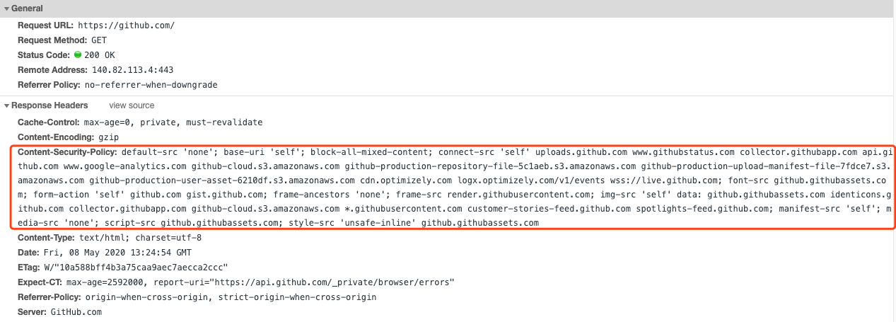
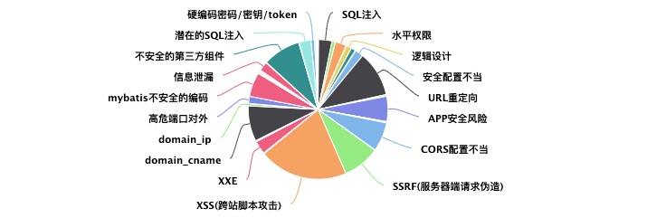
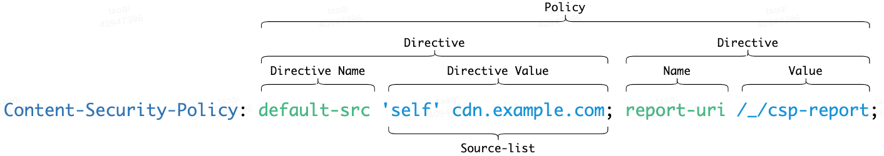

CSP
何谓 CSP
CSP （内容安全策略）的实质就是白名单制度，开发者明确告诉客户端，哪些外部资源可以加载和执行，等同于提供白名单。它的实现和执行全部由浏览器完成，开发者只需提供白名单的配置也就是CSP规则，下图为Github使用的CSP规则。

Content-Security-Policy: default-src ‘none’; base-uri ‘self’; block-all-mixed-content; connect-src ‘self’ uploads.github.com www.githubstatus.com collector.githubapp.com api.github.com www.google-analytics.com github-cloud.s3.amazonaws.com github-production-repository-file-5c1aeb.s3.amazonaws.com github-production-upload-manifest-file-7fdce7.s3.amazonaws.com github-production-user-asset-6210df.s3.amazonaws.com cdn.optimizely.com logx.optimizely.com/v1/events wss://alive.github.com; font-src github.githubassets.com; form-action ‘self’ github.com gist.github.com; frame-ancestors ‘none’; frame-src render.githubusercontent.com; img-src ‘self’ data: github.githubassets.com identicons.github.com collector.githubapp.com github-cloud.s3.amazonaws.com *.githubusercontent.com; manifest-src ‘self’; media-src ‘none’; script-src github.githubassets.com; style-src ‘unsafe-inline’ github.githubassets.com; worker-src github.com/socket-worker.js gist.github.com/socket-worker.js
CSP 大大增强了网页的安全性。攻击者即使发现了漏洞，也没法注入脚本，除非还控制了一台列入了白名单的可信主机（或者 origin/domain/host）。
如何为网站添加CSP规则
增加CSP规则有两种方式
在响应头中增加Content-Security-Policy或Content-Security-Policy-Report-Only字段
通过网页的标签
1 | |
CSP解决的安全问题
CSP可以有效解决XSS，HTTP劫持等问题，通过配置好的规则，确定页面中是否包含非法资源，与WAF配合让XSS攻击无从下手，下图为2019-2020年度漏洞占比，XSS占比漏洞最高。

CSP策略的两种使用方式
- Content-Security-Policy （拦截所有非法请求）
- Content-Security-Policy-Report-Only （上报所有非法请求，不进行拦截）
使用第二种方式的时候就需要增加report-uri字段告诉浏览器需要上报到什么地址。
CSP语法
一条CSP策略包含多条CSP指令，每个指令之间以;进行分割，每个指令包含指令名和指令值，均以空格进行分割，一个完整的CSP规则应该是以下格式的：
Content-Security-Policy: [指令名1] [指令值1] [指令值2]; [指令名2] [指令值1] [指令值2];

指令值的组成
指令值允许使用以下几种：
主机类型
| 指令值 | 解释 |
|---|---|
| https://www.github.com | 完整的指明了协议和域名 |
| www.github.com | 指明了域名，不限制协议 |
| *.github.com | 允许 github 所有子域名，不包含github.com本身，允许的协议是当前页面url使用的协议，而非任何协议都可以 |
| https://*.github.com | https协议下的 github 所有子域名，不包含github.com本身 |
| https://www.github.com/csp-report | https://www.github.com/csp-report下的资源 |
| 10.10.10.1 | ip类资源 |
| 10.10.10.1:443 | ip类+端口资源 |
| http: | 允许所有http协议资源 |
指令值的协议类型不支持通配符，不支持://.github.com这种形式，详细参考：https://www.w3.org/TR/CSP3/#framework-directive-source-list
关键字类型
关键字类型除*外需要用单引号包起来
| 指令值 | 解释 |
|---|---|
| ‘none’ | 不允许访问任何资源 |
| ‘self’ | 允许访问同源资源 |
| * | 允许访问所有资源 |
| ‘unsafe-inline’ | 允许内联资源如on事件，内联script、style标签 |
| ‘unsafe-eval’ | 允许使用eval等危险函数 |
| ‘report-sample’ | 在报告中体现部分违规代码 |
除了以上两种类型以外CSP还支持nonce-source和hash-source类型，用来指明当前页面合法的内联代码段 ，CSP项目目前不支持使用这两种方式进行配置，不做过多介绍。
可用的指令名
| 指令值 | 解释 |
|---|---|
| default-src | default-src代表很多指令的集合，在这些指令没有被指定的情况下，浏览器会使用default-src的指令值给对应的指令 |
| script-src | 用于限制全局js加载源 |
| script-src-elem | 限制 Related Articles |